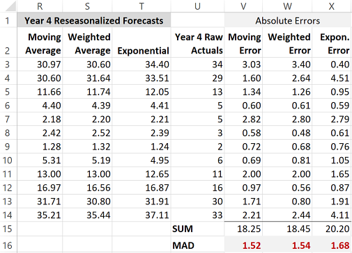
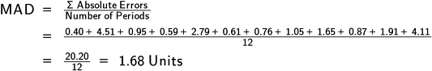
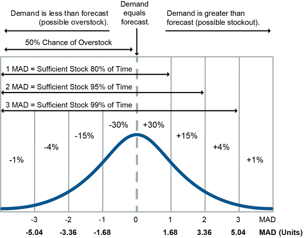
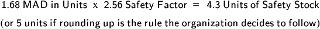
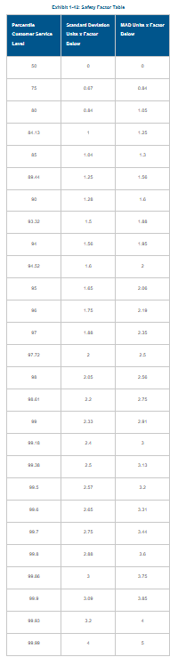
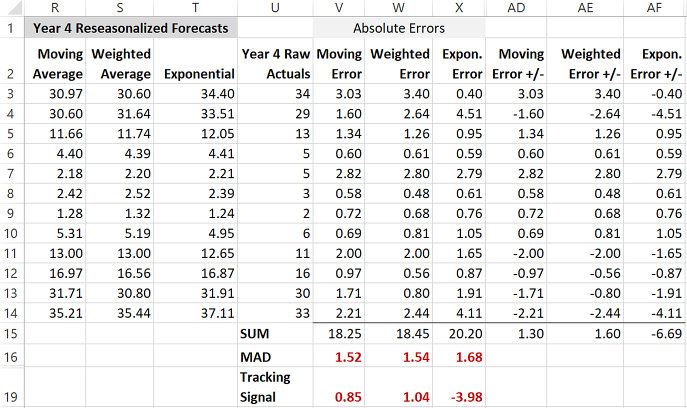
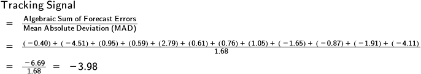
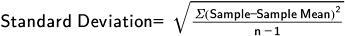

Overview
Forecast error is measured and tracked to improve accuracy and set safety stock levels. Key metrics are MAD, MAPE, MSE, tracking signal, and standard deviation.
- Forecast error = |actual - forecast|; absolute percentage error (APE) = error / actual × 100%
- Forecast accuracy = 100% - APE
- Bias = consistent directional deviation; cumulative errors ≠ 0 indicates bias; bad property of a forecast
- MAD (Mean Absolute Deviation) = average of absolute errors; most common tracking metric
- MAD used in safety stock: SS = safety factor × MAD (or × standard deviation)
- Safety factor increases with desired service level (e.g., 98% service = 2.56 MAD safety factor)
- Tracking signal = cumulative algebraic error / MAD; target typically ±4
- Positive tracking signal = under-forecasting; negative = over-forecasting
- MSE (Mean Squared Error): squares each error before summing; magnifies large errors; more sensitive for similar error magnitudes
- MAPE (Mean Absolute Percentage Error) = average of APE values; enables comparison across different products/volumes
- Standard deviation: 1 SD ≈ 68% probability; 2 SD ≈ 95%; used as alternative to MAD for safety stock
- 1 SD ≈ 1.25 × MAD (approximate relationship)
Forecast error is “the difference between actual and forecast demand” (ASCM Supply Chain Dictionary).

image46.png

image47.png

image48.png
Bias. Bias is defined in the ASCM Supply Chain Dictionary as

image49.png

image50.png
The ASCM Supply Chain Dictionary defines mean absolute deviation (MAD) as

image51.png

image52.png

image53.png
Note that an analyst would provide actual MADs for a given service level. If a specific service level is desired, such as 98 percent of orders with no stockouts, analysts can calculate the exact MAD to use as the multiplier in the calculation of units of safety stock. This multiplier is called a safety factor. The ASCM Supply Chain Dictionary defines safety factor in part as follows.

image54.png

image55.png
According to the ASCM Supply Chain Dictionary, the tracking signal is “the ratio of the cumulative algebraic sum of the deviations between the forecasts and the actual values to the mean absolute deviation.”

image56.png

image57.png
Another way to estimate forecast error would be to use standard deviation. The ASCM Supply Chain Dictionary defines standard deviation as follows:

image58.png

image59.png

image60.png

image61.png

image62.png

image63.png

image64.png
TERM / CONCEPT
ASCM definition: What is safety factor in part?
ANSWER
The numerical value used in the service function (based on the standard deviation or mean absolute deviation of the forecast) to provide a given level of customer service. For example, if the item’s mean absolute deviation is 100 and a .95 customer service level (safety factor of 2.06) is desired, then a safety stock of 206 units should be carried.
Click card to flip · Use arrows or shuffle to practise
Question 1
MAD (Mean Absolute Deviation) is calculated as:
A.Sum of (Forecast minus Actual) divided by n
B.Sum of absolute (Forecast minus Actual) divided by n
C.Sum of squared errors divided by n
D.Maximum absolute error
Question 2
A tracking signal beyond plus or minus 4 MAD indicates:
A.The forecast is performing well
B.A systematic bias exists and the method should be reviewed
C.Random variation within normal limits
D.MAD is too high to calculate
Question 3
MAPE is preferred over MAD when:
A.Comparing accuracy across products with very different sales volumes
B.All products have similar volumes
C.You need to detect bias direction
D.You want to minimize computation
Question 4
Which metric reveals whether a forecast is consistently too high or too low?
A.MAD
B.MAPE
C.Bias (cumulative forecast error)
D.Standard deviation of errors
Question 5
Forecast errors of +10, -5, +15 yield a MAD of:
A.6.67
B.10
C.8.33
D.20